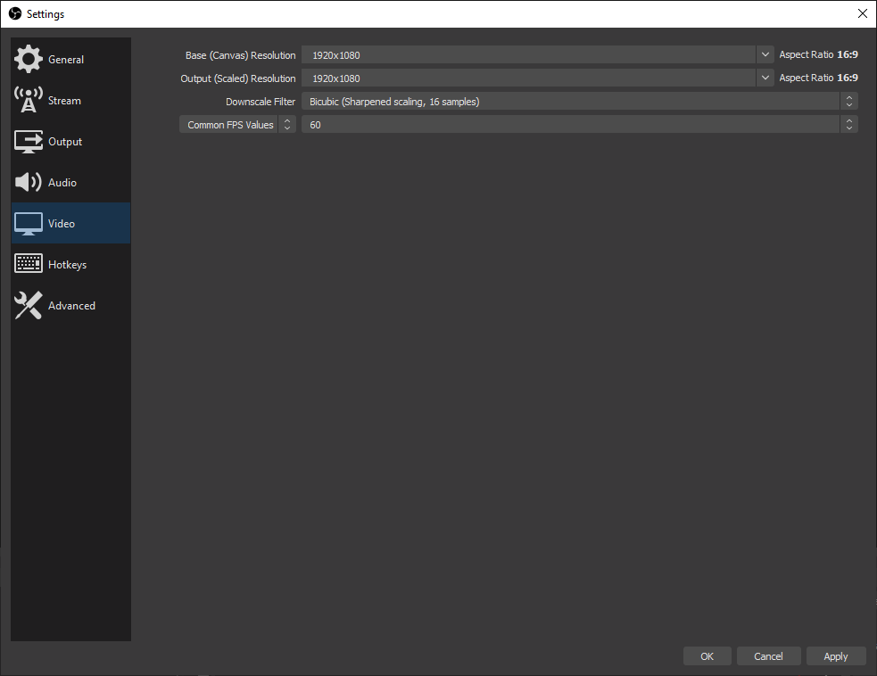
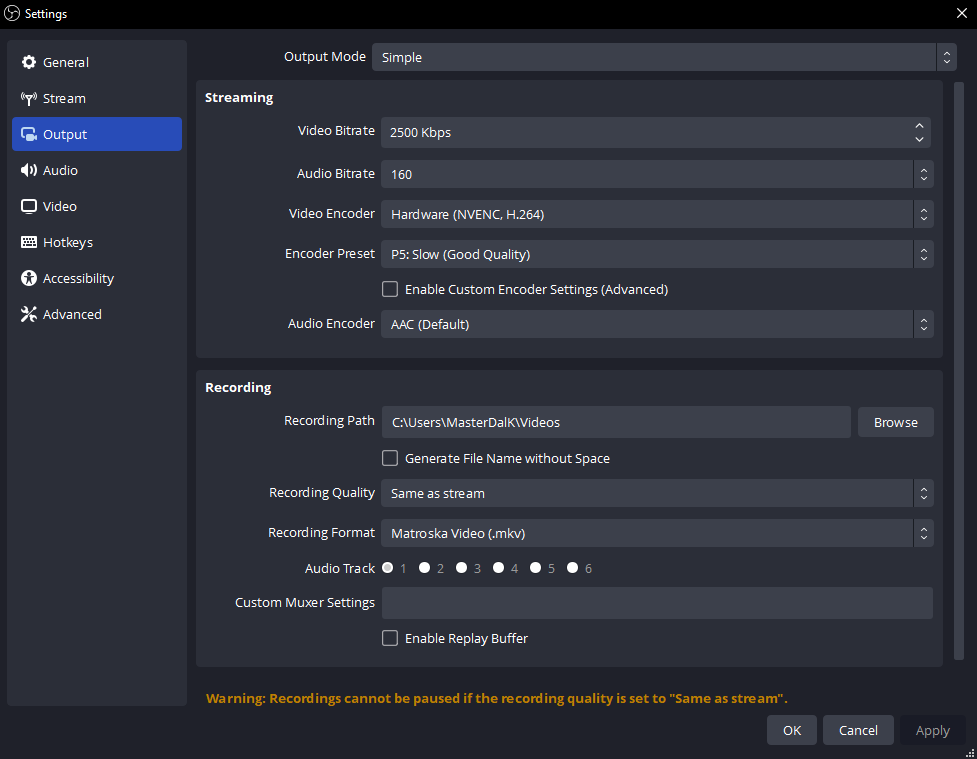

Laissez OBS faire la première configuration
- Installez OBS Studio et ouvrez-le.
- Choisir Outils → Assistant de configuration automatique.
- Sélectionnez la diffusion en continu ou l'enregistrement, suivez les instructions et appliquez les paramètres.
Autorisez l'accès à la caméra, au microphone et à la capture d'écran lorsque votre ordinateur vous le demande.
Les captures d'écran s'ouvrent en taille réelle lorsqu'elles sont sélectionnées. Les étiquettes peuvent varier légèrement selon la version OBS.

Construire une scène
Un scène est une mise en page. Un . est quelque chose à l'intérieur.
Appuyez sur + dans Scènes, nommez votre mise en page, puis appuyez sur + dans Sources.
- Appareil photo/carte de capture
- Appareil de capture vidéo
- Jeu sur Windows
- Capture de jeu
- Application/moniteur entier
- Capture de fenêtre/affichage
- Chat ou alertes
- Navigateur
Faites glisser les coins pour redimensionner. Les sources en haut couvrent celles en dessous. Utilisez l'œil pour vous cacher et le verrou pour empêcher tout mouvement.
Commutation de scène et macOS
Sur macOS, utilisez Capture d'écran macOS pour une fenêtre ou un affichage.
Les changements de scène vont normalement directement à la sortie. Mode studio vous permet de préparer une scène, puis appuyez sur Transitions. Les modifications de la source partagée et de l’audio peuvent toujours affecter la sortie en direct.
Choisir Ajouter un existant pour réutiliser une source dans une autre scène.

Choisissez la taille de votre vidéo
Ouvrir Paramètres → Vidéo.
- Toile
- La taille de votre mise en page
- Sortie
- La vidéo que vous envoyez
- 30 images par seconde
- Parler / charge de travail plus légère
- 60 images par seconde
- Mouvement rapide plus fluide
Un démarrage simple : Toile 1920 × 1080, Sortie 1280 × 720, 30 images par seconde.
Pour une vidéo portrait, utilisez un canevas 1080 × 1920 et réorganisez vos sources en conséquence.


Donnez une pause à votre processeur
Dans Paramètres → Sortie, choisissez un matériel H.264 encodeur. Un matériel dédié gère la compression vidéo, réduisant ainsi l'utilisation du processeur.
- Nvidia
- NVENC H.264
- DMLA
- AMD matériel H.264/AVC
- Intel
- QuickSync/QSV H.264
- Apple Silicium
- Matériel Apple VT H264
Aucune option matérielle ? Utiliser x264 → très rapide et commencez à 720p30.
Encodeur manquant ou ordinateur surchargé ?
Vérifiez la prise en charge matérielle et mettez à jour votre pilote graphique. OBS a toujours besoin de la capacité du GPU pour dessiner des scènes ; plafonner le FPS du jeu ou réduire le FPS de sortie s’il prend du retard.
Si l'encodeur matériel de votre Mac ne peut pas fournir CBR, utilisez x264. Compatibilité des encodeurs.


Connectez votre plateforme
Paramètres → Flux : connectez votre compte ou collez l'URL du serveur et la clé de flux privée depuis son tableau de bord.
Pour les paramètres de sortie manuels, choisissez Sortie → Avancé → Streaming: CBR, Images clés de 2 secondes, et AAC stéréo. Ouvrez votre plateforme ci-dessous.
TwitchNorme H.264
| Vidéo | Débit binaire |
|---|---|
| 720p30 | 3,000 |
| 720p60 / 1080p30 | 4,500 |
| 1080p60 | 6,000 |
Audio : jusqu'à 160 kbit/s. Paramètres Twitch.
Diffusion améliorée envoie plusieurs qualités et nécessite un budget de bande passante distinct.
YouTubeCibles recommandées H.264
| Vidéo | Débit binaire |
|---|---|
| 720p30/60 | 8,000 |
| 1080p30 | 14,000 |
| 1080p60 | 17,000 |
Audio : 128 kbit/s, stéréo 44,1 kHz. Ce sont des recommandations et non des minimums. Paramètres YouTube.
Avec l'encodage AV1/HEVC pris en charge, les cibles correspondantes sont de 6 000/10 000/12 000 kbps.
KickH.264 · CBR requis
| Vidéo | Débit binaire |
|---|---|
| Essayez 720p30 | 3,000–4,000 |
| Jusqu'à 1080p60 | 8 000 maximum. |
La fourchette inférieure est un test de départ suggéré. Essayez l'audio à 160 kbps ; utilisez la stéréo à pas plus de 48 kHz. Paramètres de coup de pied.
Laissez la marge de téléchargement. 6 000 kbps utilise environ 6 Mbps, plus l'audio et les frais généraux. Réduisez le débit ou la résolution si votre connexion ne peut pas suivre.
Orientations d’octobre 2026. Suivez les exigences actuelles de votre plateforme. Pour Facebook ou TikTok, vérifiez d'abord que votre compte propose une connexion avec un encodeur externe.
Rendez votre voix facile à entendre
- Choisissez votre microphone dans Paramètres → Audio.
- Parlez normalement. Visez les sommets autour −12 à −6 dBFS; évitez d'atteindre 0.
- Abaissez les curseurs de jeu, de musique et d'alerte jusqu'à ce que la parole soit claire.
Capturez chaque son une fois. Utilisez Desktop Audio pour l'ensemble du périphérique de sortie ou une capture d'application distincte. Capturer les deux peut doubler le son.
Filtres audio de l'application, macOS et microphone
Windows : utilisez Capture audio de l'application. Sur macOS 13+, utilisez le OBS Capture audio/écran macOS.
Micro → Filtres (Filters): essayez une légère suppression du bruit, puis un compresseur et un limiteur. Ajoutez-en un à la fois et écoutez.

Choisissez ce que vous entendez
Choisissez un casque dans Paramètres → Audio → Avancé → Appareil de surveillance. Ensuite, ouvrez le mélangeur Propriétés audio avancées (Advanced Audio Properties).
Moniteur éteint
Écouteurs Non
Flux Oui
Généralement adapté à votre micro et aux jeux que vous entendez déjà.
Surveillance uniquement, sortie muette (Monitor Only (mute output))
Écouteurs Oui
Flux Non
Écoutez sans envoyer la source directement en sortie.
Monitoring et sortie
Écouteurs Oui
Flux Oui
Utile pour les alertes ou TTS que vous souhaitez également entendre.
Suppose que la source est réactivée et sur votre piste de sortie. « Monitor Off » ne coupe pas le flux.
Évitez l'écho : ne capturez plus votre appareil de surveillance via Desktop Audio. Cela peut également envoyer de l'audio « Moniteur uniquement » aux téléspectateurs. Gardez le lecteur en direct de la plateforme en sourdine.
Ajouter une superposition de chat ou d'alerte
- Copiez l'URL de superposition de Social Stream Ninja.
- Choisir Sources → + → Navigateur (Browser) et collez-le. Conservez ses options de session et de mot de passe.
- Définissez la taille de la superposition ; utiliser 1920 × 1080 pour une superposition de paysage plein format.
- Pour TTS ou alertes, activez Contrôler l’audio via OBS.
Placez-le au-dessus de votre jeu ou de votre appareil photo. Envoyer un message test ; sélectionnez-en un dans le dock SSN si vous utilisez la superposition de messages en vedette.
Superposition vierge ou audio répété ?
Vérifiez que la session correspond à votre source de discussion. Actualisez la source du navigateur. Conservez une seule copie pour lire TTS.
Pour une conversation persistante, laissez initialement l'arrêt automatique et l'actualisation de l'activation de la scène désactivés. Configuration de la superposition SSN · Configuration de la synthèse vocale.

Enregistrez une minute. Alors allez vivre.
- Choisissez un dossier d'enregistrement dans Paramètres → Sortie.
- Appuyez sur Démarrer l’enregistrement (Start Recording). Parlez, jouez du son et changez de scène.
- Arrêtez-vous et regardez le fichier. Vérifiez le volume, le cadrage et la synchronisation labiale.
- Définissez le titre et la visibilité de votre plateforme, puis Démarrer la diffusion (Start Streaming). Vérifiez son aperçu et la santé du flux ; certaines plateformes nécessitent également Passer en direct.
Démarrer le streaming peut vous faire vivre publiquement. Utilisez un test privé si disponible. Une fois terminé, arrêtez la diffusion et confirmez que l'événement de plateforme est terminé.
Format d'enregistrement et pistes audio séparées
MKV tolère un enregistrement interrompu. Utiliser Fichier → Remux des enregistrements pour MP4 par la suite. Le OBS actuel propose également un hybride MP4/MOV résilient.
Pour des pistes d'édition séparées, conservez un mixage complet sur la piste 1, puis attribuez le micro/jeu à des pistes supplémentaires dans les propriétés audio avancées et activez-les sous Enregistrement.

Si quelque chose ne va pas
Ouvrir Affichage → Statistiques pour identifier le goulot d’étranglement.
Chutes de réseau
Débit binaire inférieur ; essayez Ethernet filaire.
Retard de rendu
Jeu de casquettes FPS ; simplifier la scène.
Retard d'encodage
Utilisez un codage matériel ou un FPS de sortie inférieur.
Sortie silencieuse
Vérifiez la sourdine, le mode de surveillance et la piste audio.
Aide aux performances du OBS · Aide pour la superposition SSN · Tous les guides